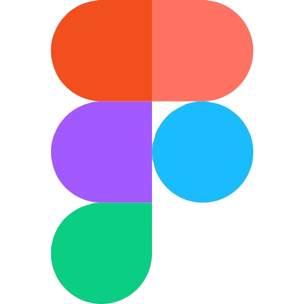
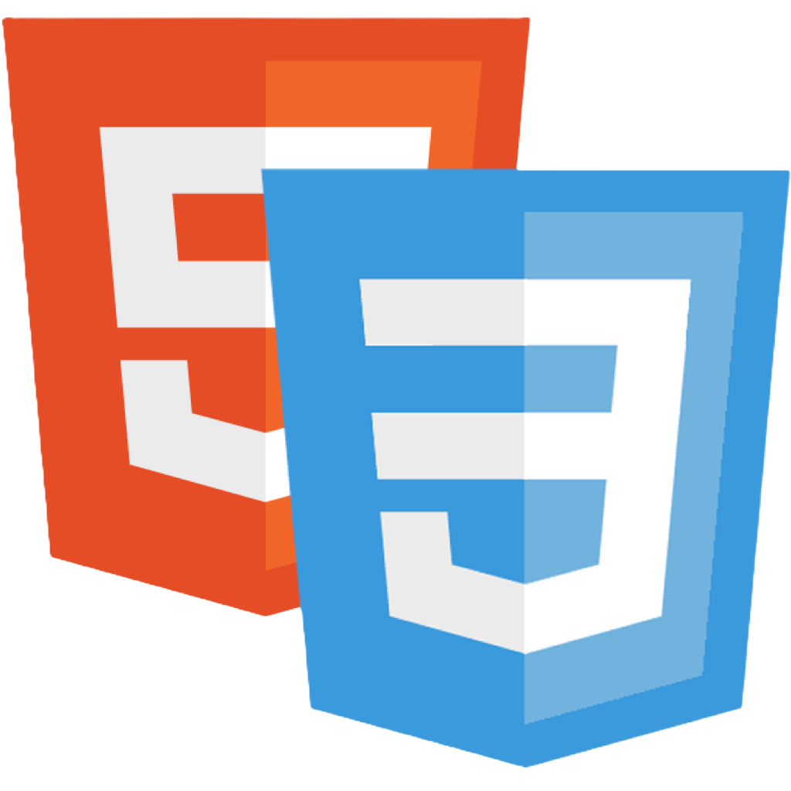
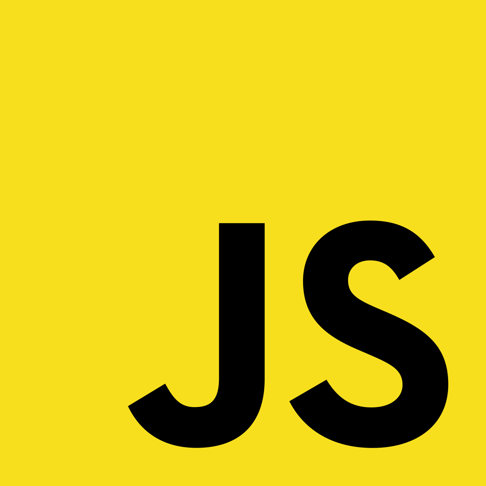
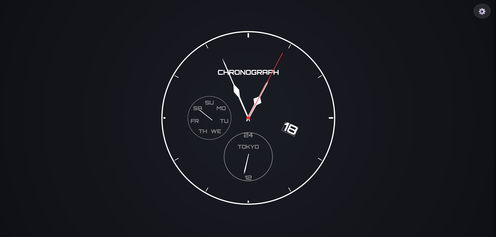
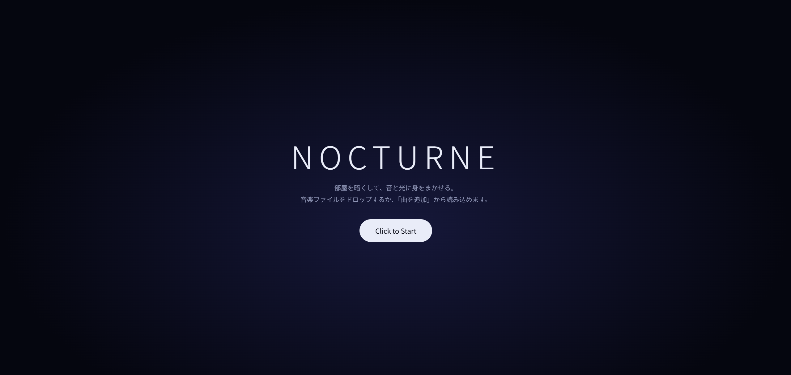
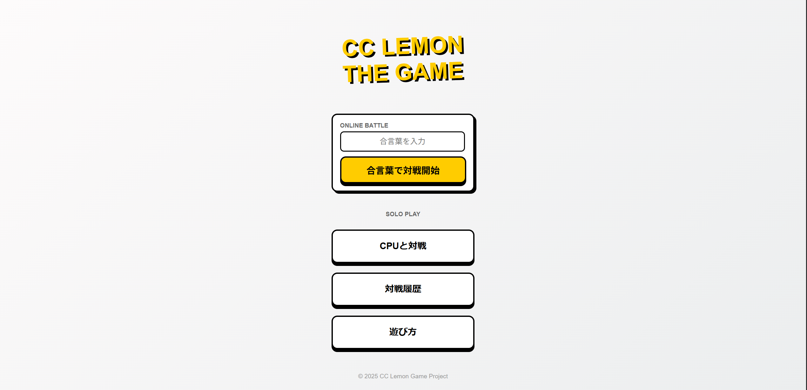
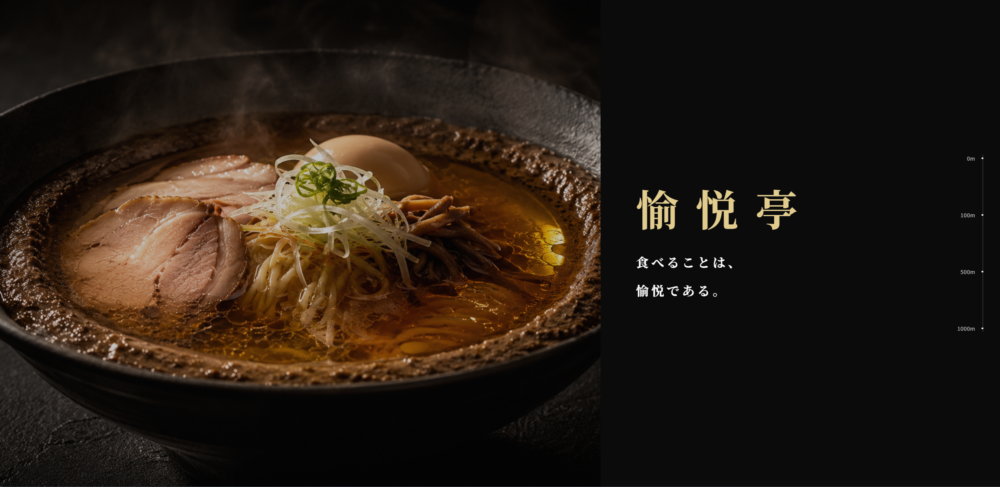

PORTFOLIO
Profile
長田 楓
考えることや試行錯誤が好きです。
AIを壁打ち相手として活用しながら考えを整理し、「もっと良くできないか」を大切にものづくりに取り組んでいます。
要件定義や設計など、形になるまでの過程にも面白さを感じています。
SKILL

Figma
オートレイアウトやコンポーネントなど、基礎的な機能をある程度扱えます。

HTML/CSS
Webページの構造設計やレイアウト・デザインの実装ができます。レスポンシブ対応など、基本的なWebサイト制作が可能です。

JavaScript
DOM操作やイベント処理などの基礎的な知識があり、Webページへの動きやインタラクションを実装できます。
生年月日
2005/10/29
学校名
東京デザインテクノロジーセンター専門学校
学年／専攻
スーパーITエンジニア専攻
出身地
東京
長所
やるときはとことんやる
短所
悪い方向に考えすぎる
Works

カスタム可能時計サイト
カスタム可能なアナログ、デジタル時計を表示するサイトです。
既存のサイトはカスタム要素が少なく、デザインにこだわれる時計を表示するサイトが欲しいと思い、製作しました。

オーディオビジュアライザー
Webで動かせるオーディオビジュアライザーです。
ダウンロードした楽曲を追加することで流せます。
既存のwebサイトのオーディオビジュアライザーは外国人向けのものが多く、派手目だったりわかりずらかったりするものが多いので、独自性の高いものができたと思います。

Webアプリ(ゲーム)
私の地域ではCCレモンと呼ばれていた手遊びをブラウザで遊べるようにしました。
対人戦とCPU戦があります。

架空ラーメン屋サイト
存在しないラーメン屋のサイトです。
メニューがラーメン一つのみなのでそのラーメンの詳細を知るためのサイトであり、一般的なラーメン屋のサイトとはだいぶテイストが違います。